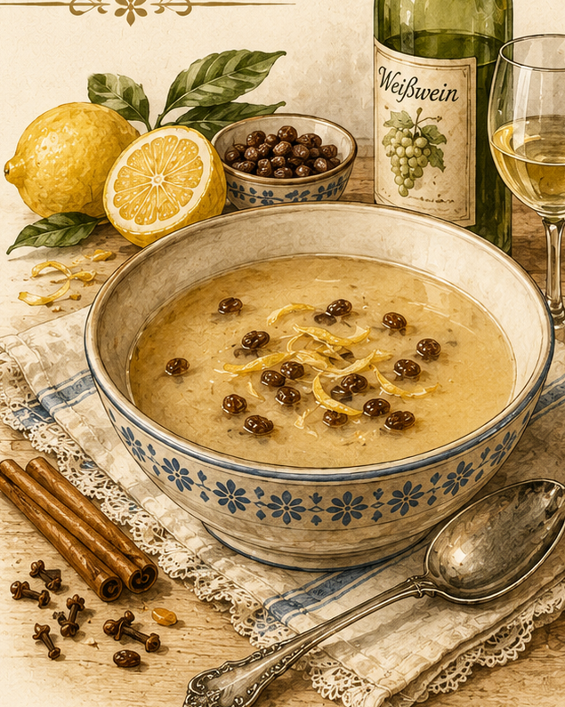

Weinsuppe
Eine süße Weinsuppe mit Reis, Zimt, Zitrone, Rosinen und Eigelb aus Friedas überlieferter Rezeptsammlung.

Originale Überlieferung
„Weinsuppe. In ¾ l kochendes Wasser schüttet man 1/16 l Reis, 1/16 l Zucker, ein 2 cm langes Stückchen Zimt, ein Stückchen Zitronenschale und läßt den Zucker mit der Gewürznelke langsam einkochen und 20 Rosinen. Nun wird ½ l Rotwein oder Apfelwein mit 1/16 l Zucker aufgekocht, zu dem Vorgekochten geschüttet und mit 1–2 Eigelb abgezogen.“
Moderne Übertragung
Reis, Zucker, Zimt, Zitronenschale, Gewürznelken und Rosinen werden zunächst in Wasser sanft gekocht. Rotwein oder Apfelwein wird mit weiterem Zucker erhitzt und anschließend zur Reissuppe gegeben. Zum Schluss wird die Suppe mit Eigelb legiert, damit sie eine leichte Bindung erhält.
Zutaten
- 750 ml Wasser
- etwa 50 g Reis
- etwa 100 g Zucker, aufgeteilt
- 1 Stück Zimtstange, etwa 2 cm
- 1 Stück unbehandelte Zitronenschale
- 2–3 Gewürznelken
- 20 Rosinen
- 500 ml Rotwein oder Apfelwein
- 1–2 Eigelb
Zubereitung
- Das Wasser aufkochen. Reis, die Hälfte des Zuckers, Zimt, Zitronenschale, Nelken und Rosinen hineingeben.
- Alles bei kleiner Hitze köcheln lassen, bis der Reis weich ist.
- Rotwein oder Apfelwein mit dem restlichen Zucker erhitzen und zur Reissuppe geben.
- Das Eigelb verquirlen und zunächst mit etwas heißer Suppe verrühren. Danach unter Rühren zurück in den Topf geben.
- Die Suppe nur noch erwärmen und nicht mehr kochen, damit das Eigelb nicht gerinnt.